| 日付 | 2026年10月31日（土） |
|---|---|
| 山域 | 西上州 |
| メンバー | 単独 |
| 山行形態 | 日帰り |
| アクセス | 車 |
| ルート (Map) | 三ツ岩岳駐車場 (8:41) - (9:34) 三ツ岩岳 - (10:06) 大津分岐点 - (11:08) 大津中央峰 - (11:19) 大津北西峰 - 大津中央峰 (11:32) - (12:02) 沢 - (12:56) 三ツ岩岳駐車場 |
三ツ岩岳駐車場に到着。標高650m。
目の前には大仁田ダムが聳えている。
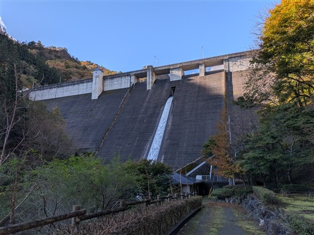
登山口にある小さな祠。
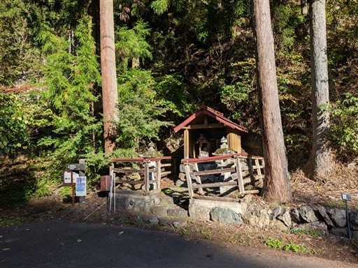
斜面を登っていく。西上州の山は登山道の傾斜が急だ。
急傾斜というか、フラットな部分がないので登りにくい。
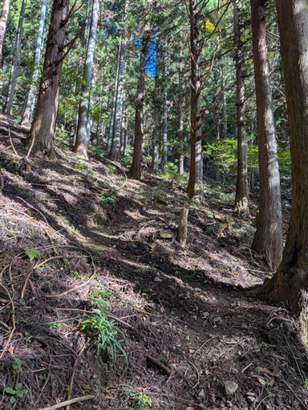
巨大な岩に突き当たる。思わず見上げるほどの巨大さだ。
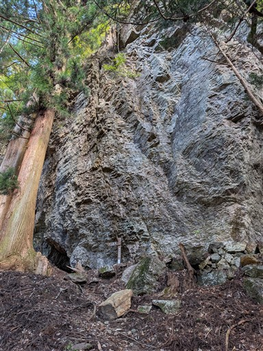
岩の下に粗末な社がある。
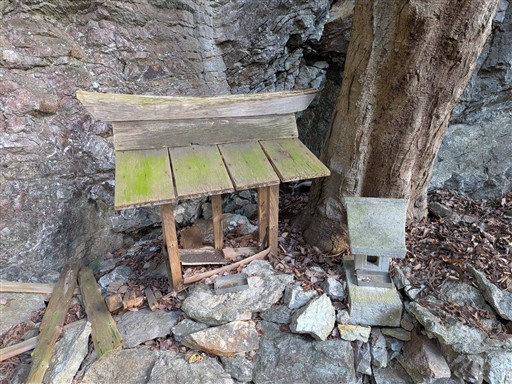
急な斜面を登りきると岩尾根に出てくる。
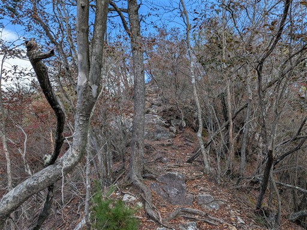
それなりに険しそうな稜線だ。
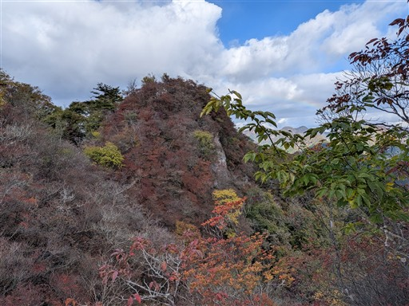
あまり目立たないが、目指す大津の岩峰群が手前に見えている。
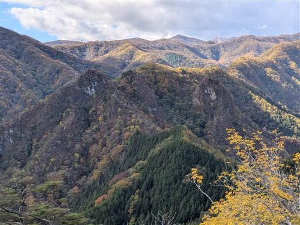
ちょっと紅葉には遅すぎた感じ。
春はアカヤシオが美しい山だが、それ以外の季節は地味だ。
大津も含めて春以外に登る人は少ない。
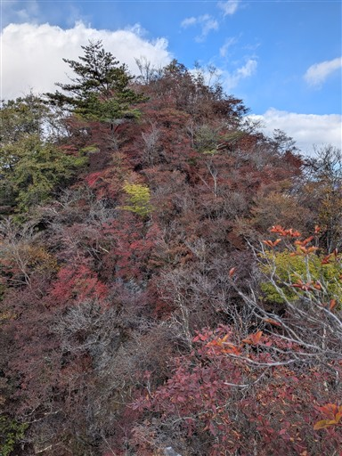
紅葉の残骸の尾根道を辿る。
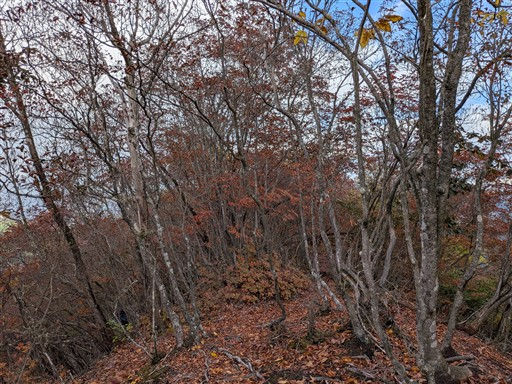
三ツ岩岳に到着。標高1032m。
10年振りの訪問だ。
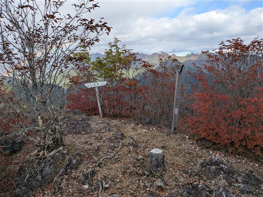
山頂からはきれいな虹が見える。
二重になっていて、外側の虹は色の向きが逆だ。
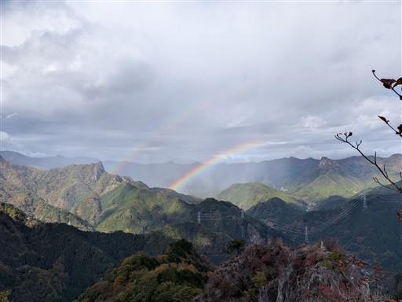
山頂から続く尾根の先にある岩峰。石祠のようなものが見える。
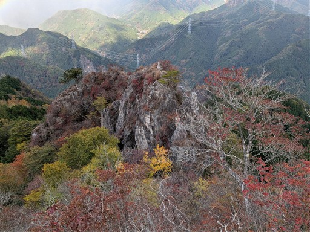
山頂から広がる展望。遠くの方に鹿岳や妙義山が見えている。
青空が見えているが風が強く、小雨がパラついてくる。これは困った。
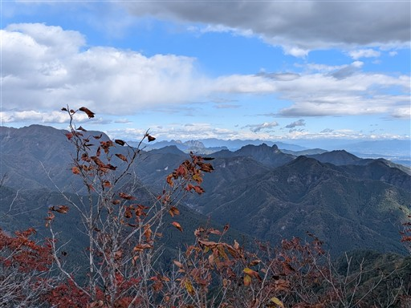
来た道を少し引き返して、分岐点から尾根コースを進む。
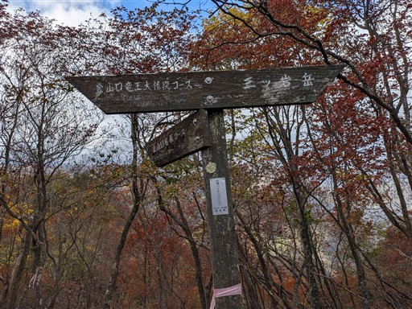
ツルにグルグルに巻き付かれた木。
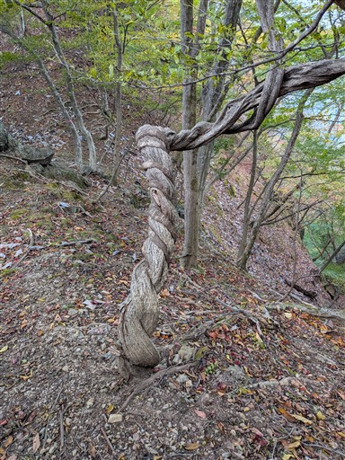
登山道は結構難しい。こんな道あったかな、と思えるような場所が続く。
以前はよく5歳児と2歳児を連れて来れたものだ。
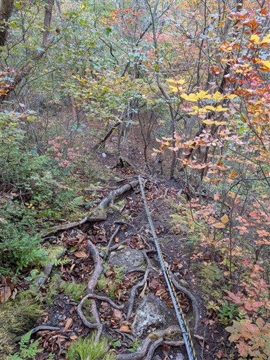
三ツ岩岳の下山コースはここから左に折れる。
大津へはここから尾根をまっすぐだ。
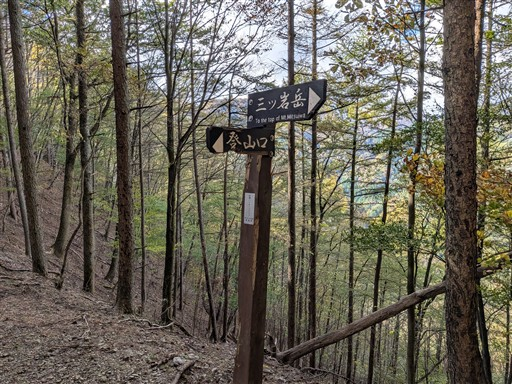
最初の方はごくごく普通の歩きやすい尾根。
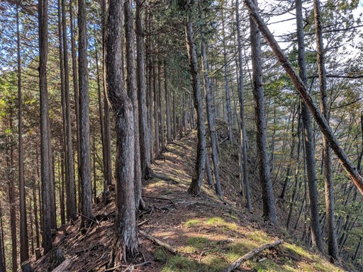
稜線から少し外れた位置にある大津北西峰が聳えている。
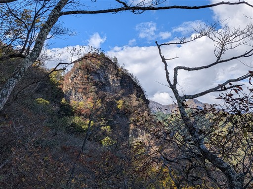
この辺りから尾根が険しくなってくる。
ストックを片付けて岩登りの準備を行う。
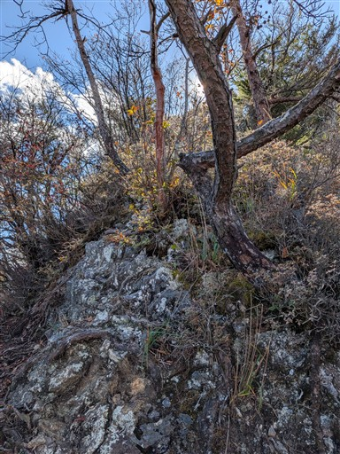
目の前に聳える大津東峰。
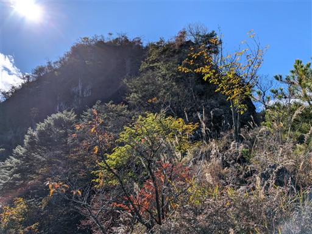
振り返ると先ほど登った三ツ岩岳が見えている。
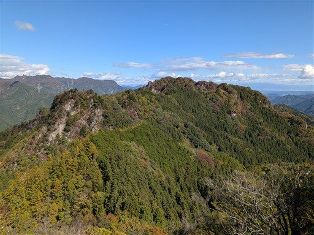
西上州の岩々した山々を見渡す。
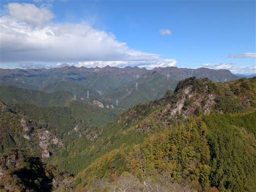
突然、尾根を遮るように現れる岩壁。本コースの核心部だ。
あまり難しそうに見えないが、安定したホールドが少なく案外登りにくい。
一度踏み込むともう戻れないため、結構恐怖感がある。
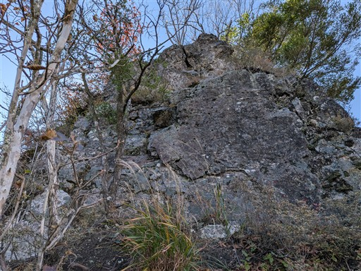
岩場を超えると、大津東峰はすぐだ。
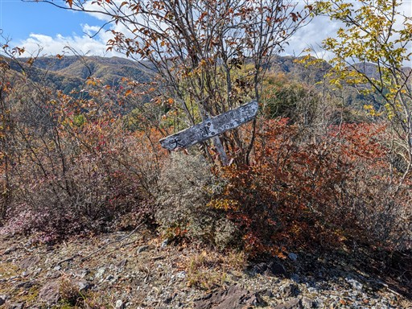
これから向かう稜線。右が北西峰だ。
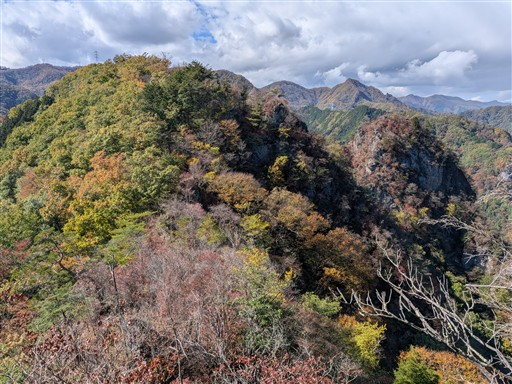
かなり狭い岩場の道が続く。まだ気は抜けない。
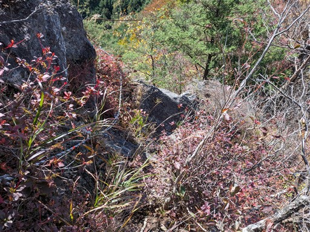
この辺りは紅葉がきれいだ。
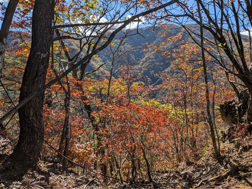
この辺りが北峰だろうか？標識はない。
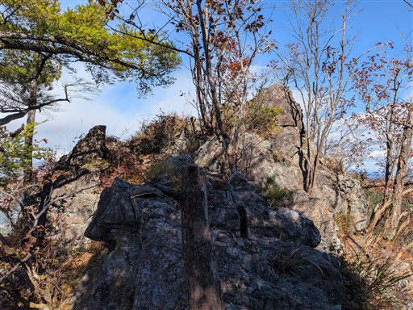
素晴らしい展望が広がる。目の前に聳えるのは先ほど登った東峰。
左の尾根が登ってきた尾根だ。三ツ岩岳で出会った方がこちらに向かっていたが
あの岩壁は登らずに引き返していくのが見える。
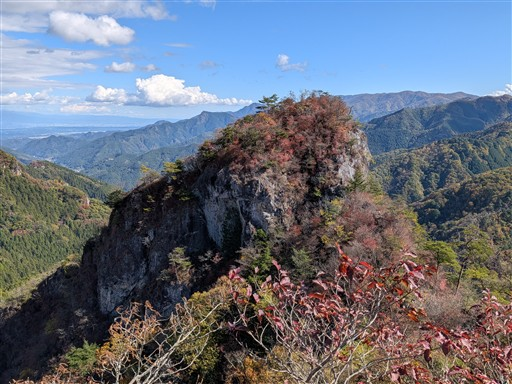
ここからも虹が見える。
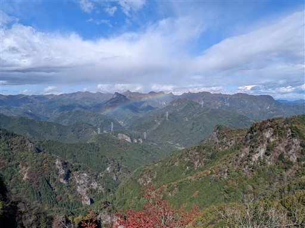
大津中央峰に到着。ここはあまり岩峰ではない。
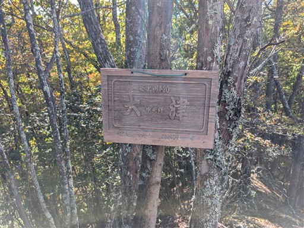
ここから稜線を外れて北西峰に向かう。
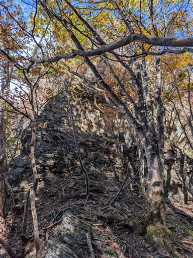
周囲は断崖だらけ。恐ろしい山域だ。
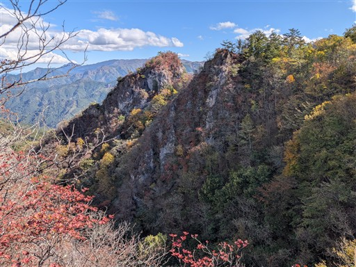
藪岩稜を登っていく。ルート取りを間違えなければ、さほど危険はない。
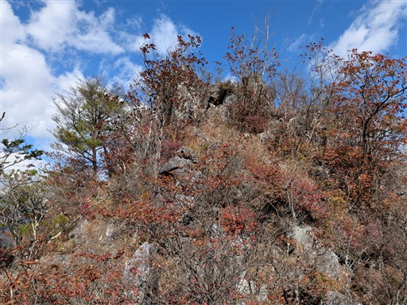
大津北西峰に到着。せっかく登ったのに標識は見当たらない。
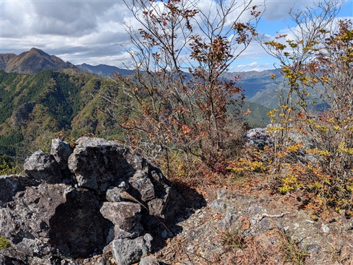
下山中に北西峰を見上げる。あまりきれいに見えるスポットはなさそうだ。
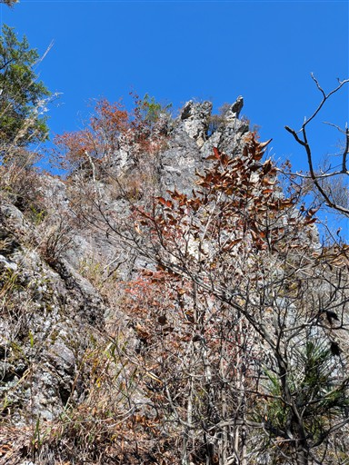
紅葉の尾根道。中央峰に戻ったら軽く昼食タイム。
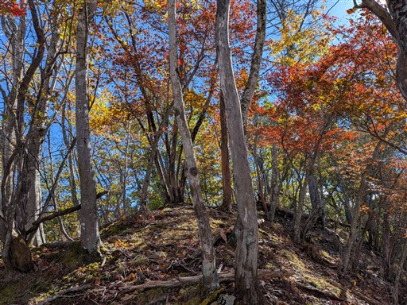
中央峰からもしばらくは尾根を進んでいく。
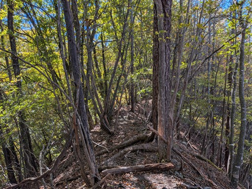
この辺りが下降点。標識が無く、踏み跡も見当たらないが
みんなここから下っているようなので、この斜面を適当に下る。
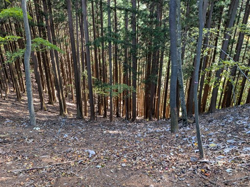
沢に下りてくる。
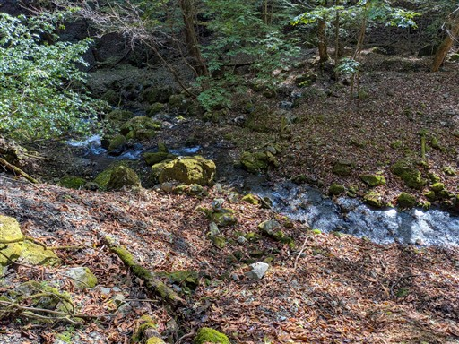
ここからは沢沿いの道があるのかと思ったが、見当たらない。
適当に沢に沿って歩いていく。落葉で水面が見えにくい場所があり慎重に歩く。
大して楽しくない道で、これならもっと早めに稜線から下りた方が良かったかも。
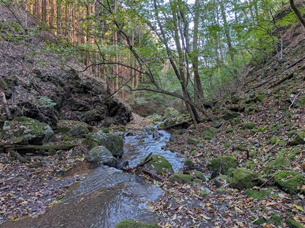
途中で道を発見。高巻きのトラバース道は好きではないが、こちらの方がスピードが出る。
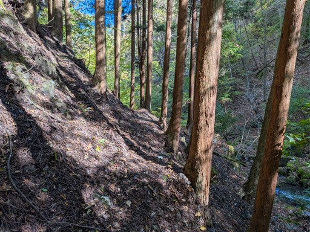
崩落個所。こういう場所があるから好きではない。
木にロープがかかっているのでかつては橋だったのだろう。
今では崩れ落ちて使える代物ではない。
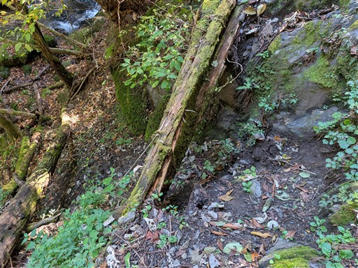
この辺りは沢が細い。さすがに沢沿いを歩くのは厳しそうだ。
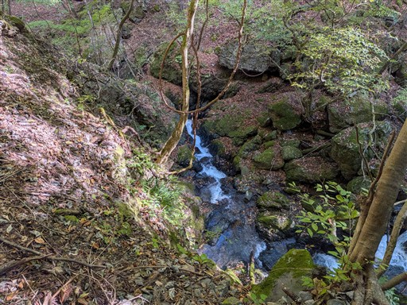
堰堤を超える。
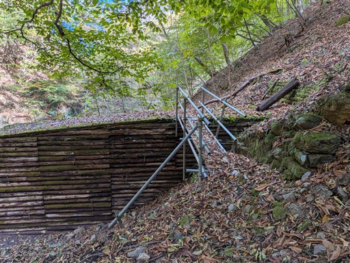
林道に到着。
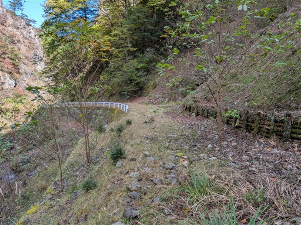
両側に高い岩壁が聳えるかなりのV字渓谷だ。
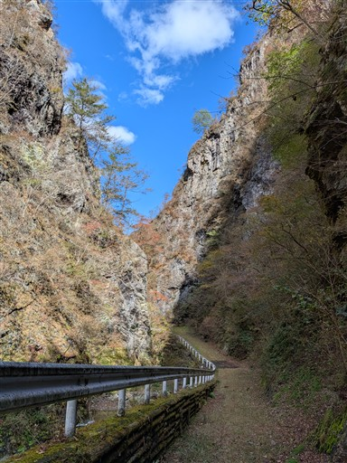
ゲートを通過。
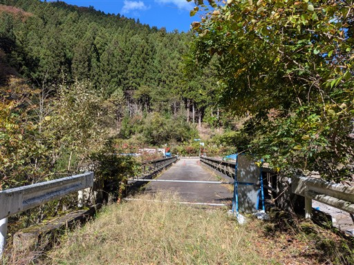
大仁田湖に到着。水は少ない。
せっかくなのでダム見学をする。
ダム湖は小さいが高度感は結構ある。
下に見える橋の辺りが車を停めた駐車場だ。
聳える岩山。三ツ岩岳の方だろうか？
ここからダムの下に行くのに、観光客向けのきれいな道があるかと思ったらそうではなかった。
ちょっと荒れた登山道という感じ。
無事下山。
下仁田駅前のヒロという店に寄ってトンカツを食べる。
大津は予想通りの難しい山だった。いかにも西上州の岩峰という感じで登りごたえがあった。
短い山行だったが前々から登りたかった山に無事登れて、充実した山行となった。